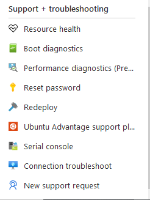
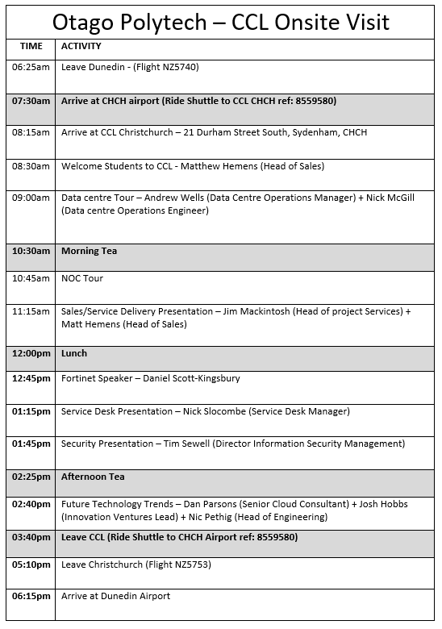
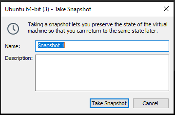
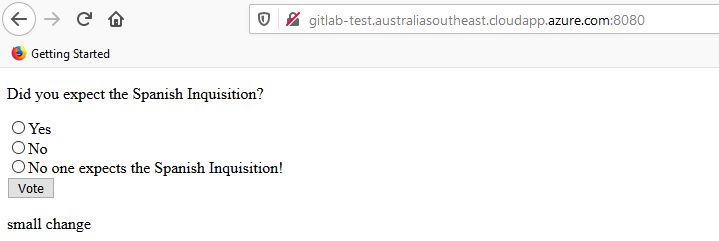

Week 1 20 — 26 July, 2020
Monday
I decided that i would come in early on the first day in order to talk to Adon to make sure that i was going to get Operations and security as my project group, thankfully as a project 2 student i got first dibs on my project choice.
Afterwards I used the time before my first project class to setup my special topic topology on my project machine, and make sure that all the applications i was using in the previous semester were updated to the latest versions
One of my main goals this semester is to try and work more on automatation this is a goal that i am carrying over from Project 1, I am hoping I can try to automate the certificate renewal and deployment for the BIT platform so that we avoid having services that our client's cant connect to like we had in the previous semester with Gitlab and accessing https://help.ict.op.ac.nz/ from outside the polytech network.
In the first project class the Operations and Security team was informed that we would be migrating from our current onsite solution to Microsoft Azure a cloud provider.
The main goal as a group would be to discover what services we are currently offering and then to determin if they are still need or can be retired, gitlab is a possible service will be retiring as it is mainly used purely for repos and Otago Polytechnic's gitlab doesn't have a great track record when it comes to uptime and reliability so instead students can just use github which alot of students were doing during the covid lockdown
After learning about the Azure migration i have decided that trying to come up with an automation solution for certificate renewals for our services might not be needed as i was unsure what services we would be taking to the cloud
Tuesday
After learning about the Azure migration yesturday that was going to take place at otago polytechnic, and that our otago polytechnic email can be used to signup for a free 30 day trial with Microsoft Azure i would see if i could take my idea for special topic and replicate that in Azure, this would allow me to get more familiar with working in a cloud based environment and any challenges that could occur with that.
Wednesday
I have managed to transfer my special topic to Microsoft Azure this has the benefit of allowing me to work on it from anywhere as long as i have an internet connection. It also means that if i break my VM i can easily remake it
As a free trial account with Azure you are limited in the amount of vCPU's that you can have in one region which limits what you can do so you need to be aware of how many vCPU's the VM you create is using
Because the way i planned my special topic i was using VM workstation in order to host my windows VM that was running GNS3, when i migrated my special topic to Azure i discovered that i couldn't run VM workstation on it and was getting error's, after further investigation into these errors i discovered that the setup i had does not support nested virtualisation
I have learnt that Azure does support nested virtualisation but only on certain setups https://docs.microsoft.com/en-us/azure/virtual-machines/acu
This information will come in handy for Project as if we migrate our vRealize solution to Azure we will need to be aware of this limitation
Thursday
In this afternoons Project class Faisal informed us about some topics that we could choose to focus on this semester
- Azure DevOps
- Azure/AWS IoT
- Azure/AWS Data Analytics / Machine Learning
- Azure/AWS Security / Automation
I also believe that automation will be the future of IT infrastructure
Week 2 27 July — 2 August, 2020
Monday
Today was both a frustrating and exciting day with my work with Azure.
I was trying to create a bridge between multiple devices similiar to what i had done in both Linux and System's Administration and after each time i tried to create a bridge i failed so i had to delete my VM as i was unable to SSH back onto that device and then recreate it.
This happened multiple times due to simple human errors so i decided that i would look into how to automate the creation of VM's in Azure so that i could save myself time if i was to mess up again, After a qucik google search i managed to find information azure automation https://docs.microsoft.com/en-us/azure/virtual-machines/infrastructure-automation
After i saw that Ansible was on the list of tools that works with Azure i went and took a look at the documentation as well as the modules that Ansible has and discovered Ansible's cloud modules https://docs.ansible.com/ansible/2.9/modules/list_of_cloud_modules.html#azure
With this information i will try and create a playbook that will automate the deployment of a VM in Azure
Tuesday
I was checking the Operations and Security ticketing website https://ticketing.op-bit.nz/ to see if we had anything left over from last semester and i noticed that a request came in last week for an IoT server to be created for the IoT project team which i noticed was still not complete even though other team members were working on it, they said they were having issues with connecting to it after they created it, i believe it was because they were using the dev test labs in Azure.
I talked to Faisal about this and we decided that we would create a resource group specificly for this Vm and that i would be made owner of it, this would allow me to have full control.
As i had already created a Ansible playbook that would deploy a VM in Azure i decided i would also use Ansible to deploy the IoT server this would allow me to get more practice using Ansible as well as have a playbook that i could run if they needed additional servers in the future
I created a Ubuntu VM in Azure according to the specs they required

I have uploaded the playbook to my github which can be found can be found here https://github.com/samsojl1/Otago-Polytechnic/blob/master/Special-Topic/Ansible/ansible/iot/IoTData-28-07-2020.yml
I acknowledge that having the username and password displayed in the playbook is not even close to ideal but this was a quick playbook created to see if i could get things to work, ideally you would rather use SSH keys or pull the password / user variable from another file that isn't publicly published.
Wednesday
One of the tasks of the Operations and Security team is to backup the data of our gitlab server and no one had done it yet so i went and talked with Rob about this and he had a hard drive that was used for those backups so i took the harddrive and followed the instructions that a previous Operations and Security group had created for gitlab backups, due to the size of the gitlab files and having to use WinSCP the process had to be ran over night.
Thursday
I spoke to Rob about getting access to a csv file for the students currently in project, i would use the contents of this csv to load them into the gitlab server, I also took a copy of the gitlab backup data in order to see if i could use that to populate the new gitlab server.
Friday
I decided i would attempt to automate the creation of a gitlab server using an Ansible playbook and then to configure that gitlab server using the contents of the backups i took yesturday.
Week 3 3 — 9 August, 2020
Monday
After a few unsucsessful attempts i finaly managed to create the gitlab VM in Azure using an Ansible playbook now all i needed to do was to download and install gitlab onto the server and then populate it with the contents of the gitlab backup i took last week.
I managed to get gitlab ce installed onto the server but it turns out the version i downloaded was way ahead of the version used for op's gitlab so i had to downgrade to the same version in order to import the data from the backup.
After installing the correct version of gitlab ce onto the gitlab server i created and copying over the gitlab backup data from my local machine i was ready to run the reconfigure command on gitlab that would rebuild gitlab with the contents from the backup, This sucsessfully worked and i had my own working copy of the otago polytechnic gitlab and all the users and repo's but unfortunately i missed one of the folders when i did the reconfigure so i lacked the content of the repo's.
Now that i have managed to manually configure the gitlab server i decided that i would script the process so that if we were migrating gitlab it would be all set to go on a new server, i took the commands that i had entered on the command line in order to download and install gitlab as well as reconfigure it to use the backup data and put this into an Ansible playbook.
Now that i have everything i need to recreate gitlab quickly I have deleted my test gitlab server from Azure and am ready to run the gitlab playbooks tomorrow.
Tuesday
This morning i ran my Ansible playbooks that were designed to recreate gitlab, everything worked correctly
The playbooks that were used for this can be found here https://github.com/samsojl1/Otago-Polytechnic/tree/master/Special-Topic/Ansible/ansible/gitlab
I had to make some minor changes to the playbook which was to set the correct version of gitlab to be installed and a typo in the url link
After making these minor changes everything works exactly as planned
The finalised playbooks are gitlabStage1.yml and gitlabStage2MKII.yml, i left the previous versions i was working on in the folder as they may prove useful in the future
Wednesday
An update to the IoT Ubuntu ticket came in
The IoTData VM created in Azure last week needed ports 80 and 443 open thankfully in Azure there is an easy interface to open up ports.

I also did ufw allow on those ports on the IoTData server just to be sure and confirmed with Jordan the everything was now working for him.
Thursday
Now that i have managed to create a VM in azure using an ansible playbook i want to expand upon this by creating multiple copies of a resource, if i can figure this out it may prove useful in automating the creation of VM's for such papers as IN724 Security and IN734 Operations Engineering
Friday
I have put the gitlab automation on the backburner as it turns out we are extremely likely to be discontinuing it. Even though most of the work i did for this was wasted i learnt alot about both Microsoft Azure and Ansible which will be useful in the future.
Week 4 10 — 16 August, 2020
Monday
Anthony Locke asked for my assistance in helping to create a minecraft server for him as he was unable to host one on a Raspberry Pi at his flat
I informed him that as an Otago Polytechnic student he could use his email to signup for a free 30 day trial and he could use that to host a server in Azure that could be used to run a minecraft server, it would also have the added benefit of being able to have a public ip and a DNS so that connecting to it would be alot easier
After we setup a server in Microsoft Azure we used the following guide to configure it to run minecraft https://minecraft.gamepedia.com/Tutorials/Setting_up_a_server
This was a very interesting task as i had once previously rented a minecraft server and to see how easy it is to setup i might just host my own in the future.
Thursday
This afternoon Adon informed us that there would be a trip planned to the Christchurch based IT company Compuer Concepts Limited(CCL) for the project 2 Operations and Security team if there wasnt another lockdown.
Friday
Tim came to me after hearing about the Minecraft server that i had created for Anthony and asked if i could create a Minecraft server for him which i was happy to do as it wasn't a very complex process and because he is also a Otago polytechnic student he had a Azure free trial avaliable to him.
Because i already created Anthony's Minecraft server twice i was very familiar with it so it only took me 5 minutes to get Tim's server configured and working.
Week 5 17 — 23 August, 2020
Monday
Tim came back to me this time requesting the he wanted to convert his server from a standard to a modded one, which required more configuration and having to deal with version compatability issues. While this was stressful trying to figure out how to get it working, once i managed to get it to deploy without errors it was a satisfying result
Wednesday
After messing around with trying to create bridges on my Azure hosted VM's and bricking them so i couldn't SSH back onto them to revert the mistake i discovered that Azure has a useful feature called "Serial console"

This allows you to connect directly onto your VM much like if you were to plug a cable directly into your server this allowed me to revert the bridging error i made instead of having to recreate a new VM and updating that to the point before i did the bridge.
This saved me alot of time as i ended up bricking it twice more in the day
Week 6 24 — 30 August, 2020
Monday
Today we had professor Martin Hohmann-Marriott come in to talk to us about what hes been working on in the open source field, he also talked about how he likes to work with open source technology as they are alot cheaper then commerical products and can be easily reproducde through things like 3D printing.
He also invites us to attend a talk he was having later that day, unfortunately i did not attend as the idea of open source didn't exactly align with what i want to achieve in network and infrastructure automation.
Friday
As a standing request from Rob we had to check the computer kits in D312 to make sure that they were working correctly and if anything wasn't we were to document it and try to fix it, this week it was me and Jae's turn to check.
Jae and I identified a few machines that needed network drivers installed which we did by downloaded the driver on another machine onto a usb and transfering the drivers to the effected machine, we also discovered a few kits that were not displaying video, we tried a few different fixes such as making sure everything was plugged in correctly internally as well as reseating the ram and other components, unfortunately this did not work so we took the downstairs to the work room to be worked on next week as it was approaching the end of day.
A link to the checklist report can be found here
Week 7 31 August — 6 September, 2020
Monday
I came in early this morning in order to work on the kits that we had identified last week that wernt working correctly.
Rob had new motherboards that we could use to replace the current ones in the effected machines to try to see if that would work, it worked for one of them.
Another machine needed to have a graphics card installed as the onboards VGA didn't work
Also in the workroom were 3 other machines which had been in there for atleast a semester as i remember seeing them in there in project 1, i decided while i was fixing last weeks machines that i would take a look at them and see what the issue was, one of the machines just needed to have network drivers installed which was easy to fix.
The second one just needed a graphics cards added in as the on board VGA wasn't working and as we were out of graphics card this would serve as a backup kit for when one of the kits that did have a graphics card stopped working this could take that card and replace it
The final machine had a broken motherboard cpu socket so i replaced that with a new motherboard
I informed Rob about the updated state of these machines and he was happy.
Week 8 7 — 13 September, 2020
Nothing special happened this week just general mainteance of the BIT Platform and more work with Azure and Ansible.
Week 9 14 — 20 September, 2020
Tuesday
Today we were informed that the trip to CCL was going to proceed but it was going to be pushed back till later in October most likely the fourth week.
Friday
I am attempting to create Microsoft Azure resources using an Ansible playbook that is generating the names for those resources using a provided csv, so far it is only creating the first name in the list i believe this is due to an issue with he variable i am using in my playbook
Week 10 21 — 27 September, 2020
Wednesday
A thought that accured to me was that if we were also migrating away from vRealize and hosting those virtual machines required for those papers in azure that we would require some way for students to connect to them
I brought this concern up with Rob and that we might need to create a gateway server so that students could access the virtual machines used for systems papers
After bringing up this concern i went and checked if Azure offers any kind of on premises solution to which they do https://docs.microsoft.com/en-us/microsoft-365/enterprise/connect-an-on-premises-network-to-a-microsoft-azure-virtual-network?view=o365-worldwide
A possible solution is to merge the Otago Polytechnic network with a azure virtual network allowing students to connect to VM's hosted in azure while they are on an OP computer but they would still require a gateway to connect when they are off premises
Another possible solution is to give every VM a public ip that the student could use to connect to, but this also has a huge cost to it and by giving it a public ip it opens it up to attack
Alternatively a solution is to have something simillar to the kate server currently in use at otao polytechnic, were you would login to that server with unique credentials then ssh from that server to your required VM, this option would be the best in terms of cost as you would only need a public ip on the gateway server, it also adds the benefit of security as you only need to secure the gateway from unauthorized access. this would be my preferred option.
Azure offers the ability to easily create peerings between networks in your azure subscription allowing for devices in different networks and subnets to communicate with each other this would offer alot more flexability when it comes to configuring specific paper related VMs, you could put additional rules on the security paper network in order to restrict the ability of accedentially sending commands to an undesired target
Thursday
This morning I have sucsessfully managed to create Azure resources based off a csv file
I talked to Issac Underwood about the possibility of creating a simple web page that would ask the user to enter their name and store that, this was going to serve as the basis of getting the user to create VM's in azure
using ansible i managed to sucsessfully create a playbook that would allow for the bulk creation of VM's in Azure based on the number that the user entered i was then able to configure this so that it would pair that network with my current network using Azure's network peerings
Friday
After thinking about how users were going to sign into the VM creation website i remebered that the help.ict.op.ac.nz site had a link that would take you to a VMWare site where you would sign in using your login credentials but unfortunately it was no longer up, so i had to ask Rob if he had the original code for it so i could reuse it and just change it so if they logged in it would instead redirect them to the creation website, it turns out that it was updated by yan recently i was going to speak to yan about it after we got back from the holidays
Holidays Week 1 28 September — 4 October, 2020
Wednesday
This Morning i was informed that the CCL trip was going ahead next week and that Faisal would like us to complete the level 1 and 2 of Fortinet NSE Certification before the trip, thankfully it was free to do.
Holidays Week 2 5 — 11 October, 2020
Tuesday
Faisal requested that before we go to CCL that we get our NSE 1 and 2 certifications


Thursday
Today was the day of the trip to CCL
The trip was overall a great success
Week 11 12 — 18 October, 2020
Monday
I was looking into come of the other features you can do with the Azure command-line interface (Azure CLI) and i had the idea that you could use it to check to see if a user is in a specific resource group and if they were in that resource group then they would beable to create a VM.
My plan would be to combine the VM creation website created before the holidays and use the output from that to run a script that would run my Ansible playbook that would run then run a check using Azure CLI and if it came back it would create a VM and assign it to that user.
Thursday
Today we had Mark Waller from OneCall a IT company in Dunedincome speak to us about what it is he works on and some of the skills they look for. https://www.onecall.net.nz/
He talked about how services are heading towards a subscription based business and that while the future is heading towards cloud there will always be a need for physical infrastructure and that a hybrid solution of cloud and physical will be popular
Week 12 19 — 25 October, 2020
Monday
This morning i talked with Yan about the work she did with the VMWare webstore and being able to use Otago Polytechnic login credentials to sign into it, my plan was to see if it was possible to copy the code that she used for this and intergrate it into the simple webpage that Isaac created in order to verify that it was infact an Otago Polytechnic student, you could then expand on this by creating a few scripts that would take perform checks
Get the login that the student used then using Azure CLI commands take that username and see if they were in any resources groups and if it came back positive then they would beable to create a VM
After talking more with this with Rob we came to the conclussion that another idea would be to.
Create a resource group that would house the virtual network i.e. a resource group named "IN724" and then give every student in that paper a resource group you would then link the VM they create in their own resource group to that of the paper resource group by using that network for the VM's network, this would allow for students to beable to sign in to azure and restart or turn off there VM's while not being able to touch other students VMs
Doing it this way is the most logical choice and would allow you to have more control over the networks, you could have specific firewalls on different networks based on what they needed to achieve.
Tuesday
A ticket came in asking for a storage increase on a IoT Server, it took us a bit to figure out where it was stored because we wern't sure if it was local, vRealize or Azure. We discovered that it was stored in vRealize but as Operations and Security members we couldn't make any changes to it
I talked to Rob about getting the permissions of the server changed so that someone in the Operations and Security team was the owner, my theory on this was that if one of us were the owner we would beable to make changes such as increasing the disk size of the VM. It turns out even as owner we couldn't make this change so i had to go back to Rob to talk with him and see if he could add an additional disk to the server which he was able to do.
Now that the IoT server had the additional disk, it just needed to be configured so that they could use it and unfortunately we didnt know the login credentials so i updated the ticket informing them of the current progress and that we would require credentials to login
Wednesday
Since i would now need to configure the disk on the IoT server i decided i would mess around with snapshots, so i created an ubuntu vm using VM workstation and took a snapshot of it, having never messed around with snapshots before it was extremely easy to figure out

The only thing i wasn't aware of atleast with snapshots in VM workstation is that it will remove network capability untill you revert it.
Thursday
After talking with Faisal we came to the conclussion that asking the client for their login credentials wasn't the best in terms of security practice, so instead we were to ask the client if we could make an admin account on their server so that we had access, so we had to update the ticket requesting permission to make an admin account on this server.

We were notified of a breach in one of the VM's using a public ip
Week 13 26 October — 1 November, 2020
Monday
Labour Day
Thursday
I remebered that Isaac's website was made using flask and that i was able to create a docker container flaskapp for the virtualisation assignment 3 so i will attempt to put the VM creation flaskapp in a docker container and then because the server that it is located on has a public ip i'll be able to see if i can connect to it.
I managed to get the VM creation website to deploy

If i can get everything done in time i will come back to this and try to implment my plan of creating resources using this site.
Friday
After hearing back from Faisal in regards to the IoT server that requires more disk space i went and spoke to Rob about him adding an admin account onto their server so that we could login and configure the disk, Rob had to change the student accounts password from what it was to the polytech default password after this i was able to login using it and create an admin account acccording to the details stored in the KeePass file.
As no one else in the Operations group wanted to actually configure it, i ended up with the task but as i had to leave early it wouldnt be done until Monday morning.
Week 14 2 — 8 November, 2020
Monday
This morning i was working on configuring the disks on the IoT server, After failing to combine the 2 disks into one logical disk i decided to look over the previous semester's gitlab documentation and discovered that a previous group had done something simillar with redirecting docker to a larger disk.
After this experience i believe that other project teams shouldn't be coming to the Ops team to solve their problems if they made the server instead they should come to us and request that we make it for them so that we already have an admin account setup on it to avoid the long wait time before the issue was resolved.
Thursday
Today we had a Q&A with Nick Baty on security
He talked about how he got into IT security and that you dont start out in the security field, that you migrate into it from other positions
After the meeting with Nick I then followed up with Cameron to confirm with him if he was happy about the IoT server solution and closed the ticket, i also noticed that the IoTData ticket from August was still opened so i also closed that as that ticket had been resolved
Friday
I created a linux VM in azure for Damian Pang so that he could finish his docker virtualisation assignment, this only took 30 seconds as i still had my generic linux vm creation ansible playbook.
Week 15 9 — 15 November, 2020
Monday
Showcase
Raspberry Pi wifi? / Ansible minecraft server creation? in docker? O.o create a server in minutes?
I was messing around with my docker assignment from virtualisation and i wanted to see if i could deploy it and connect to it using a public ip
This should of been simple as all i needed to do was install docker on one of my Azure servers then run "sudo docker stack deploy --compose-file docker-compose.yml test", it managed to build and deploy sucsessfully but when i went to connect to it it wouldnt, at first i was stumped because i had done something very simillar with the webtest deployment 2 weeks ago, so i compared the 2 servers and noticed that i forgot to enable the ports in Azure to accept 8080

After this i spent more time writing my project portfolio.
Tuesday
Today i spent most of the day finishing up my project portfolio
Wednesday
Today i spent most of the day writing my project report
Thursday
Hand in portfolio and report